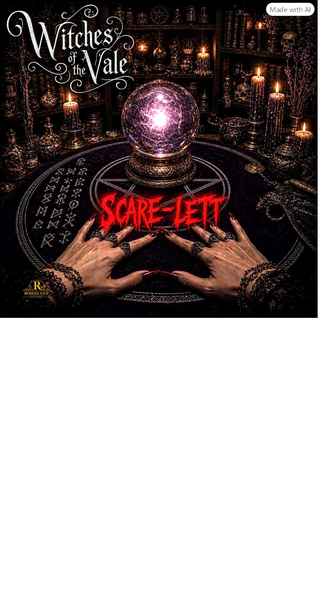

Metal
Ghosts of the Fallen
The Ghost of 17
Roman Ent Records is a home for story-driven music across metal, dance, country, blues, rock and cinematic worlds.
The Ghost of 17

Caught in the Rhythm

Witches of the Vale

The Good, The Bad, The Ugly & The Grace

You Say Nothing

Candice My Love

Uncle Joe’s Tales

Drink From the Well

Step into the broadcast with Amp Anderson, music-driven stories, strange signals and a growing cast of characters.